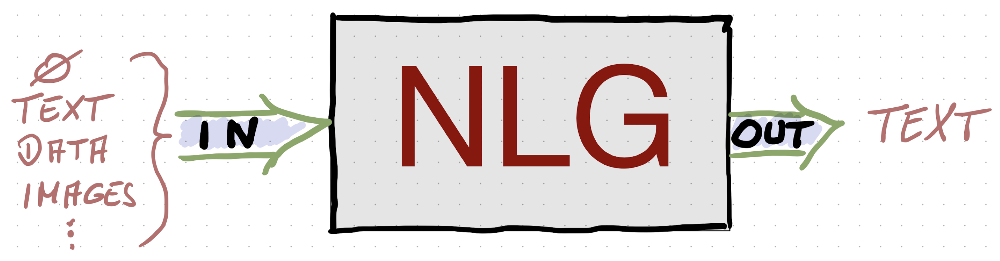

Course overview#
This course covers the use of neural language models for natural language generation (e.g., image descriptions, summarization, story generation, question answering etc.). It focuses specifically on recent approaches trying to leverage insights from pragmatic theory, in particular from probabilistic modeling of pragmatic utterance selection, to improve neural NLG by making generated text more context-dependent and task-relevant.

The course introduces the basics of NLG, neural language models (purely text-based and grounded to visual input (e.g., for image captioning)) and their implementation in PyTorch, as well as a selection of recent pragmatic neural NLG approaches.
The general structure of the course is as follows:
Overview NLG
Probabilistic pragmatics
Basics of PyTorch
Neural language models
Pragmatic models of neural NLG
Grounded neural language models
Pragmatic approaches to grounded NLG